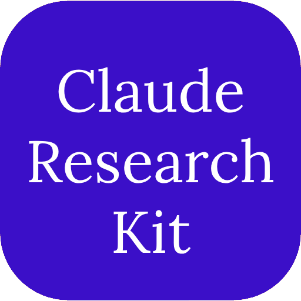

Turns Claude Code from an eager intern into a rigorous co-author — source-grounded academic writing for LaTeX + BibTeX.
In code, a hallucination breaks the build and you find out. In a manuscript, a hallucinated citation looks correct — and survives to peer review, or print.
\cite resolves in references.bib — enforced[VALUE — verify], never a guessA deterministic loop — advisory rules backed by shell hooks that block on violation.
A discipline layer that's tested, not just documented — ResearchKitBench proves every blocking hook on each PR.
citation-gate, compile-gate, block-fabrication, protect-sources, stop-gate, word-budget, figure-orphan…
/claim-check, /literature-review, /peer-review, /stats-check, /gap-finder, /submission-pipeline, /manuscript-cycle…
peer-reviewer (Reviewer 2), integrity-reviewer, fact-checker, outline-planner, vault-maintainer.
An annotated bibliography built from your sources — /lit-ingest proposes the .bib entry from the document, never fabricated.
ai-ml, life-sciences, social-sciences, medicine — venue conventions and reviewer concerns per discipline.
Deterministic, no LLM — the hooks are a contract, re-asserted on every PR (ubuntu + macOS).
Drop it into your manuscript repo, fill in MANUSCRIPT_MAP.md (thesis, contribution, venue), and start a session.